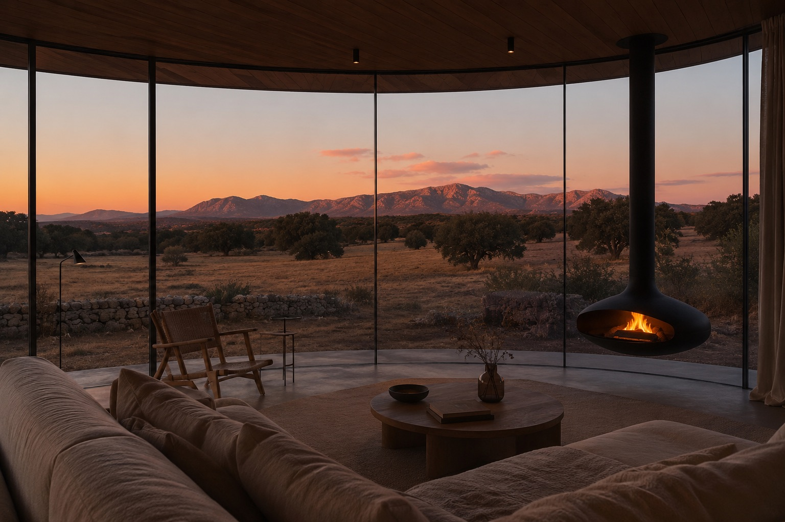

A room at the hotel · indicative visualisationA serviced mountain estate for Madrid, forty-five minutes from the city.
A private collection of villas and residences on a seven-hectare estate in the Sierra de Guadarrama, set within a further twenty hectares of protected countryside, all meadow, dehesa and granite, with a wellness hotel, spa and working farm at its heart. This is what we are building, who it is for, and what it sells for.
Designated residential land · Sector 1B · Sierra de GuadarramaWhere it is
Forty-five minutes north of Madrid, at the foot of the Sierra de Guadarrama National Park. Close enough to use every weekend, far enough to be another world.
Door to door in about forty-five minutes: from Madrid Centro, up the A-6 or M-607, to the foot of the sierra.
The land
Meadow and dehesa rising into pine and granite, framed by dry-stone walls, with the Sierra de Guadarrama on the horizon.
The estate, outlined: seven hectares traced in light, the village beyond, and a further twenty hectares of protected countryside around it. Click any image to enlarge.
Site Images
Site photography, January 2026 · Sector 1B, El Boalo. Swipe or scroll sideways to walk the land; click any image to enlarge.
What we are building
A low-density estate of villas set on the south-facing contours, with a wellness hotel and spa, a working farm and a sports club, and the majority of the land kept open as dehesa and trails. Simple buildings, few materials, the landscape left to do the work.
The estate entire: villas on the western contours, the hotel and its gardens at the centre, courts and play to the east, the farm beyond, and the village on the far side of the road. Indicative visualisation.
An estate villa at dusk, and one of the hotel's standalone rooms in the landscape. Indicative visualisations.
Timber play in the dehesa, within sight of the room. Indicative visualisations.
How it is built. The design is deliberately simple. Buildings sit low and quiet in the landscape, using few materials and using them well: local granite, timber, lime render, glass where the view earns it. Nothing competes with the sierra.
That simplicity is what carries the estate. Every structure exists to put people into the landscape rather than to shield them from it, and restraint in the building is what lets the land do the work. It is the most effective use of this site, and the most durable.
What is for sale
One envelope of 17,621 m² on seven hectares, in five parts. The rooms and the villas sell to private buyers; the spa, restaurant and commercial sell separately, as a business.
| Product | Buildable | €/m² | Sold as |
|---|---|---|---|
| Hotel rooms | 5,286 m² | 4,500–5,500 | Individually, owned outright, managed and let by the hotel |
| Villas | 5,392 m² | 3,200–3,600 | Freehold, in a range of sizes, on their own plots |
| Spa, restaurant & commercial | 5,110 m² | 2,800–3,200 | Separately, as an income-producing asset |
| Regulated homes · VPP | 3,524 m² | ~1,800 | Public register, outside the agency mandate |
| Parking | 1,762 m² | with the unit | Allocated pro rata to the rooms and the homes |
Areas are from the current development brief and will be fixed at Plan Parcial. VPP is sold at the regulated ceiling for this price zone.
The rooms. Standalone rooms across the estate, sold individually and owned outright. They stay inside the hotel's world: serviced daily, and let by the hotel whenever the owner is away, so the room earns in the weeks it would otherwise stand empty.
The villas. Freehold homes in a range of sizes on their own plots, with full access to everything the estate offers.
The spa, restaurant and commercial. Sold separately as the operating heart of the estate, together with the management contract over the rooms. We are in talks with a select group of operators, and with figures from the culinary world to pair the right restaurant with them.
The regulated homes. Placed between the estate and the pueblo, and built to the same architectural standard as everything else here. They are the estate's edge onto the village, so they are designed as a piece of the village.
The suite villa: a hotel suite that is also your home. Indicative visualisation.
Alongside the homes, owners buy into the estate itself: the hotel and spa, the farm, the sports club and the dehesa commons, with trails, dark skies and a horizon that stays open. That is the difference between a house in the sierra and a residence on a serviced estate, and it is what the branded tier is priced on.
The farm restaurant from above. Indicative visualisation.
The programme
Built on what the area is already known for. Every part of it exists to put guests and owners straight into the landscape, and each one gives the hotel another reason to be visited.
Wellness hotel & spa
A boutique hotel and spa on the access contour, serving owners and guests, and making every home a serviced residence
Farm & table
A working farm and kitchen garden on the east meadow, developed with local farmers, feeding a restaurant meant to be a destination in itself
Courts & play
Padel and tennis, pools, a fitness pavilion, and timber play structures for children
Climbing & mountain
Guided climbing and bouldering on La Pedriza, nearly a thousand routes minutes away; walking and trail running from the gate; La Maliciosa (2,222 m) above the village
Riding
On the cañadas and drove roads with the established local stables
Snow
Navacerrada and Valdesquí about thirty minutes further up the sierra, and the peaks under snow from the estate all winter
Dehesa commons & dark skies
Half the estate held open: trails along the dry-stone-wall spines, stargazing, low lighting by design, no fences
Bike hub & trails
Mountain-bike and gravel trails through the dehesa, a workshop and secure storage, and road routes to the sierra passes from the door
Water
Embalse de Santillana, ten minutes away: open-water swimming, paddle and kayak, birdwatching
The village
The estate opens to Mataelpino’s boloencierro and the harvest calendar: local producers at the table, festival weekends
The farm and the table. The farm is being developed with local growers as a real agricultural operation rather than a decorative kitchen garden, and we are looking to extend it across the 200,000 m² of protected landscape around the sector: the estate's produce, and the sierra's, on the table. Alongside it we are in talks with figures from the culinary world to pair the right restaurant with the incoming operator, so the food is a destination in its own right and not a hotel amenity. A restaurant people drive up from Madrid for brings the estate an audience of its own.
The farm as a working operation: greenhouses, market rows, grazing, and the harvest on the table. Indicative visualisation.
Skiing, climbing and the reservoir are the sierra’s own; the estate organises them. Indicative visualisations throughout.
Market analysis
The buyer lives in Madrid. Some 65,000 declarations in the region clear €150,000 a year, the wealth sits in the corridor facing the sierra, and two thirds of those households have yet to buy a second home. We are building where their money already wants to be.
Three buyers, all already in Madrid
| Buyer | Pool | Buys | What to test |
|---|---|---|---|
| Sierra primary movers Madrid families relocating to the corridor |
400–650 households a year | Estate villa · from ~€850k | Schools, year-round living, the commute |
| Second-home buyers High-income Madrid, no second home yet |
~45,000 households | Estate villa and suite villa | Weekend use against the coast |
| Madrid internationals 1.2M foreign residents, 45% of prime purchases |
1.2M residents | Suite villa · from ~€1.5M | Serviced, lock-and-leave, the brand |
Each buyer maps to a product and a question. Section 08 asks you to test exactly these. Movers are net padrón growth across the seven corridor towns at 2.5 people per household; second-home pool is the €150k+ declarations less the share already holding one.
The ask, against the pool
The corridor already closes ~2,100 dwelling sales a year across the ten towns. Selling the estate out means taking under four of every hundred. The question is not whether Madrid absorbs it, but which buyer moves first.
Why now
- Madrid prime is compounding.
Five to six per cent a year, three years running. Knight Frank names Madrid Europe's strongest prime market again for 2026.
- New build has set a record.
€5,172/m² in the city, December 2025, up 10.7% on the year and the highest in the series.
- The corridor has nothing to sell.
A handful of townhouse and semi-detached schemes in the pipeline, none of them serviced. The estate arrives into a market repricing upward with nothing like it to buy.
- The hotel recruits its own buyers.
1.2 million people visit the national park on this slope every year, and guests who come for a night become owners. The sierra has no five-star address, and Madrid's luxury hotels are all in the city.
The shop window itself: the great hall, and the estate workspace for the days you work from the sierra. Indicative visualisations.
Where the price sits
Priced against real villas, not averages: thirty-plus live listings across the sierra corridor, pulled July 2026. The estate villa matches what new design villas already ask in the ring; the suite villa carries the serviced premium that clears twenty minutes away today.
Inner ring: quality 300 m²+ villas in El Boalo, Moralzarzal, Manzanares el Real, Becerril and Collado Mediano ask €650k to €1.2M. New design villas in the same towns ask 3,750 to 3,870 €/m². In Torrelodones, twenty minutes closer to Madrid, new villas ask up to 5,500 €/m² and €3.2M. The suite villa is that Torrelodones money, offered a hotel instead of a motorway.
And the corridor clears at these levels: the average Torrelodones purchase reached ~€935,000 in 2025 with transactions up 10%, and prime homes there now sell in under four months, down from six to eight a year earlier. The ten corridor towns together closed ~2,100 dwelling sales in 2024 and again in 2025.
Reading the pricing honestly
Three things carry this pricing. We would rather set them out than have you find them.
- The step up from resale · €2,060 → €3,400/m²
What sits between those numbers is everything the resale house does not have: new build, the hotel and spa, the farm, and a horizon that stays open. New design villas in these same towns already fetch €3,750 with none of that behind them, so most of the step is already proven in the corridor.
- The operator · not yet signed
The suite-villa tier is priced with a named operator on the estate. Talks are under way; until a brand is signed, read that tier against the estate villa.
- The timeline · fixed at Plan Parcial
Areas and counts are indicative within the planning envelope until then, and reservations are expressions of interest, not contracts.
Comparables
Europe's serviced, branded destination retreats. Two dozen are set out here on the dimensions that drive value: proximity to a major city, where El Boalo leads, price per m², climate and operator.
| Retreat | Setting | €/m² | Nearest city · drive | Climate | Operator |
|---|---|---|---|---|---|
| El Boalo | Spain · Sierra de Guadarrama | 3,400–5,500 | Madrid 45 min · 7.1M | Continental mountain · 4 seasons | BYLD |
| One&Only Aesthesis | Greece · Athens Riviera | ~12–20k | Athens 30 min · 3.7M | Mediterranean coastal | One&Only |
| The Ellinikon Riviera | Greece · Athens Riviera (urban) | ~7,630 | Athens, in metro · 3.7M | Mediterranean coastal | LAMDA (branded) |
| Terre Blanche | France · Provence | ~7,700+ | Nice/Cannes 45 min · 1.0M | Mediterranean · warm | Terre Blanche |
| Bürgenstock | Switzerland · Lake Lucerne | ~15–25k | Lucerne 30 min · Zurich 1h | Alpine lake | Bürgenstock |
| Muda Reserve | Portugal · Comporta/Alentejo | ~8–14k | Lisbon 1h · 2.9M | Mild Mediterranean | Vanguard |
| Costa Terra | Portugal · Melides | from €4M | Lisbon 1h15 · 2.9M | Mild Mediterranean | Costa Terra (Doronin) |
| Tegernsee estates | Germany · Bavaria | ~10–15k | Munich 1h · 2.9M | Alpine foothills · 4 seasons | independent |
| La Zagaleta | Spain · Benahávis | ~6–12k | Málaga 1h · 1.7M | Mediterranean | gated estate |
| Finca Cortesin | Spain · Casares | ~8–14k | Málaga 1h · 1.7M | Mediterranean | resort estate |
| Sotogrande | Spain · Cádiz | ~4–8k | Gibraltar 30 min · Málaga 1h15 | Mediterranean | gated estate |
| Son Vida | Spain · Mallorca | ~8–12k | Palma 15 min · 0.5M | Mediterranean island | resort estate |
| Quinta do Lago | Portugal · Algarve | ~6–10k | Faro 15 min · Lisbon 2.5h | Mild Mediterranean · 300+ sun | resort estate |
| Kitzbühel chalets | Austria · Tyrol | >10k | Innsbruck 1h · Munich 1h45 | Alpine · ski | independent |
| Lefay | Italy · Lake Garda | ~8–12k | Verona 1h · Milan 2h · 3.2M | Mild lake · 4 seasons | Lefay |
| Argentario | Italy · Tuscan Maremma | ~6–10k | Rome 2h · 4.3M | Mediterranean | independent |
| Six Senses Crans-Montana | Switzerland · Valais | ~9.5–21k | Geneva 2h · 0.6M | Alpine · ski | Six Senses |
| The Alpina Gstaad | Switzerland · Bernese Oberland | ~25k+ | Geneva 2h | Alpine · ski | The Alpina |
| Amanzoe | Greece · Porto Heli | ~15–25k | Athens 2h45 · 3.7M | Mediterranean | Aman |
| Rosewood Castiglion del Bosco | Italy · Val d'Orcia | ~10–18k | Florence 2h · Rome 3h | Continental Med · 4 seasons | Rosewood |
| Reschio | Italy · Umbria hills | ~10–15k | Perugia 45 min · Rome 3h | Continental · 4 seasons | Castello di Reschio |
| Andermatt | Switzerland · Uri Alps | ~16–18k | Zurich 90 min · 1.4M | Alpine · ski Nov–Apr | The Chedi / Elie Saab |
| Costa Navarino | Greece · Messinia coast | ~5,760 | Kalamata 40 min · Athens 3.5h | Mediterranean · hot summers | Mandarin Oriental / W |
| Ombria | Portugal · inner Algarve | ~4,375 | Faro 25 min · Lisbon 2.5h | Mild Mediterranean · 300+ sun | Viceroy |
€/m² disclosed from published sales where available, otherwise an estimate from the local prime market. Per-unit prices shown where sold whole. Metro figures are population; CHF converted at ~1.05. Drive times approximate.
Four things read straight off the table.
- We enter at the floor of the category.
The band runs from around €4,375/m² up through the €6–15k Mediterranean, Tuscan and lake estates to €16–25k in the high Alps and the Aman tier. Our pricing sits at the entry, with the whole category above us.
- No peer combines what we have.
A metropolitan market of 7.1 million, larger than Lisbon or Athens, forty-five minutes away, and a genuine mountain landscape. The city-adjacent peers are urban seafront, not countryside. The great rural estates sit two to three hours from Rome or Athens. We have both.
- Four seasons, so demand runs all year.
At 920 m the estate is a cool-air escape from Madrid's summers, has snow within reach in winter, and temperate spring and autumn. The Mediterranean peers are summer-led and the Alpine peers winter-led. We are open, and sought after, in every month.
- The brand premium is there to take · +39%
Branded residences in resort locations command a 39% premium over unbranded stock, the highest of any setting, against a 33% global average. An operator affiliation on this estate captures that uplift directly.
What each retreat charges over its own city
A retreat is bought by the city that feeds it, so the honest test of price is the multiple it asks over that city's own housing, set against what that city can pay. On that test every peer charges a premium. We are the only one asking less than the city behind us.
| Retreat | Feeder city | City €/m² | Retreat €/m² | Multiple | City GDP/cap |
|---|---|---|---|---|---|
| Reschio | Perugia | 1,221 | ~12,500 | 10.2× | 32,600 |
| Amanzoe | Athens | 2,580 | ~20,000 | 7.8× | 36,700 |
| One&Only Aesthesis | Athens | 2,580 | ~16,000 | 6.2× | 36,700 |
| Lefay | Verona | 2,816 | ~10,000 | 3.6× | 42,200 |
| Rosewood Castiglion del Bosco | Florence | 4,733 | ~14,000 | 3.0× | 39,500 |
| The Ellinikon Riviera | Athens | 2,580 | 7,630 | 3.0× | 36,700 |
| Finca Cortesin | Málaga | 3,784 | ~11,000 | 2.9× | 26,000 |
| La Zagaleta | Málaga | 3,784 | ~9,000 | 2.4× | 26,000 |
| Costa Navarino | Kalamata | 2,461 | 5,760 | 2.3× | 22,000 |
| Quinta do Lago | Faro | 3,870 | ~8,000 | 2.1× | 33,400 |
| Argentario | Rome | 3,758 | ~8,000 | 2.1× | 43,800 |
| Son Vida | Palma | 5,257 | ~10,000 | 1.9× | 38,200 |
| Muda Reserve | Lisbon | 6,107 | ~11,000 | 1.8× | 48,800 |
| Tegernsee estates | Munich | 7,855 | ~12,500 | 1.6× | 66,600 |
| Sotogrande | Málaga | 3,784 | ~6,000 | 1.6× | 26,000 |
| Terre Blanche | Nice | 5,216 | ~7,700 | 1.5× | 37,300 |
| Ombria | Faro | 3,870 | 4,375 | 1.1× | 33,400 |
| El Boalo | Madrid | 6,013 | 3,400–5,500 | 0.7× | 47,900 |
City €/m² is the metro residential average, mid-2026, from the national portal index in each market. Retreat €/m² is the midpoint of the band in the table above. GDP per capita is Eurostat regional GDP in PPS per inhabitant, 2023, one measure across all markets. The Swiss and Austrian peers are left out here: their home cities price above the retreats themselves, so the multiple carries no meaning.
The peer group asks about twice its city. We ask seven tenths. The median retreat here sells at 2.2 times the average metre in the city that feeds it, and the top of the group at six to ten times. The estate villa at €3,400 is 0.57 times the Madrid metre and the suite villa at €5,000 is 0.83 times it. A Madrid buyer trades their flat for a villa on a serviced estate and pays less per metre than they would in their own street.
And Madrid can pay. At 47,900 PPS per inhabitant, Madrid's purchasing power sits level with Lisbon, above Rome, Florence, Verona, Athens, Faro and Málaga, and roughly twice Kalamata's. The retreats charging six and ten times their city sit in the weakest of these economies. We are asking the lowest multiple in the group of the second strongest.
Two readings follow, and both help the sale. Either the estate is priced under what this market will carry, or the whole category has been pricing scarcity that Madrid has not yet been offered. The first is upside for the early buyer. The second is the reason to be early.
The estate can grow
The land around the sector is available to us, and we intend to take it.
- The horizon, secured in perpetuity
Adjacent parcels can be brought into the estate to extend its private landscape well beyond the sector boundary. That land carries the grounds, the trail network, the paddocks and the farm, and nothing is ever built between these homes and the sierra.
- 200,000 m² farmed, not fenced
Grazing, olives and field crops supply the restaurant; the land becomes the guests' walking and riding country; and the hotel draws on what its own landscape produces. The surroundings are not a buffer, they are part of the operation, and they are what makes the hotel sustainable in the plain sense of the word.
- Seven hectares to a landholding measured in tens
For a buyer, that is the difference between a view and an owned view. It also gives the scheme room to add further phases of homes and hospitality as demand proves out.
- Upside beyond the plan · the general plan is being redrawn
Madrid's growth keeps moving north, and El Boalo's 1996 norms are due to be replaced. Land classified as rural today can be brought forward for residential use in that process, as it has been elsewhere in this corridor. If any land around the sector is reclassified in time, the value created falls first to the people who bought at the beginning, on land bought at rural prices.
The reclassification is a possibility, not a plan and not an entitlement. None has been applied for or granted, and none is promised.
The estate today, and the estate once the land around it is farmed. Indicative visualisations.
A call to Madrid agents
Present the estate to your buyers and tell us what comes back. We are looking for hard signal, not opinion, and for the partners who will bring it to market with us.
- Appetite at the price points.
Estate villas from ~€850,000 and suite villas from ~€1.5M. Where does interest concentrate, where does it break, and what are buyers looking for?
- The two buyer routes.
Greater-Madrid primary and second-home buyers, and international buyers who want a capital within an hour. Which converts faster?
- Product and size.
Preferred villa sizes, plot sizes and typologies, so the mix is shaped by demand.
- The pull of the serviced offer.
How much of the premium is carried by the hotel, spa, farm and the guaranteed open horizon? And which operator would draw the buyer: a culinary destination, a wellness house, a sporting estate? We are actively seeking a partner to curate the programme.
- Reservation intent.
Expressions of interest and reservation appetite off-plan, with the deposit level buyers will commit at.
Sources
Market & catchment. AEAT, Estadística de los declarantes del IRPF 2023, Comunidad de Madrid (64,640 declarations above €150k, 6,573 above €601k; Pozuelo €88,011; Madrid 44% of €601k+ earners); INE Atlas de Renta and padrón, table 2881 (corridor population growth); INE ECEPOV 2021 (31.2% of households above €5,000/month hold a second residence); Banco de España, Encuesta Financiera de las Familias 2022; Colegio de Registradores and Notariado (buyer origin, 2025); Knight Frank Madrid (internationals 45% of prime purchases, 2024); Parque Nacional de la Sierra de Guadarrama, visitor statistics 2024.
Transactions & velocity. MIVAU, transacciones inmobiliarias por municipio (2024–2025, latest quarters provisional); Engel & Völkers northwest-Madrid market report via idealista/news, Sep 2025 (Torrelodones average price and selling times).
Villa comparables. 30+ live idealista listings across El Boalo, Moralzarzal, Manzanares el Real, Becerril, Collado Mediano, Alpedrete, Guadarrama, Hoyo de Manzanares, Galapagar and Torrelodones, July 2026; idealista municipal price index, June 2026.
City comparison. Metro residential averages mid-2026 from the national index in each market (idealista, idealista.pt, ImmoScout24, Immobiliare.it / Monitorimmobiliare, MeilleursAgents, Spitogatos, Indomio); Eurostat regional GDP per capita in PPS, 2023 (nama_10r_2gdp).
Prices. idealista / Fotocasa indices; Sociedad de Tasación (Madrid new-build €5,172/m², Dec 2025); Knight Frank Prime Global Cities Index and PIRI (Madrid prime growth 2023–2026); Savills Branded Residences report 2025/26 (resort premium 39%). Peer retreats: published sales and prime-market data for each destination.
Scheme. Ficha urbanística Sector 1B, NNSS El Boalo (BOCM núm. 174, 25 Jul 2011); BYLD masterplan tool, map.gobyld.com.
Contact
Take it to your buyers.
Email usBYLD · Calle Conde de Aranda 1, 28014 Madrid